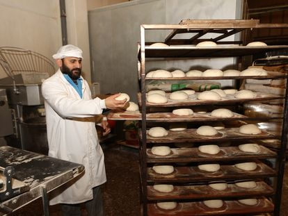

Crisis en la industria panadera en Ucrania
La interrupción del tráfico de cereales ucranios por culpa de la guerra ha agitado los mercados y ha disparado la cotización de productos como el trigo o el maíz. El sobreprecio añade carga a la casilla de los costes, ya de por sí penalizada por el repunte incesante de la factura de la electricidad. El encarecimiento de las materias primas y de los suministros “absorbe el margen bruto de la actividad y genera inquietud”
